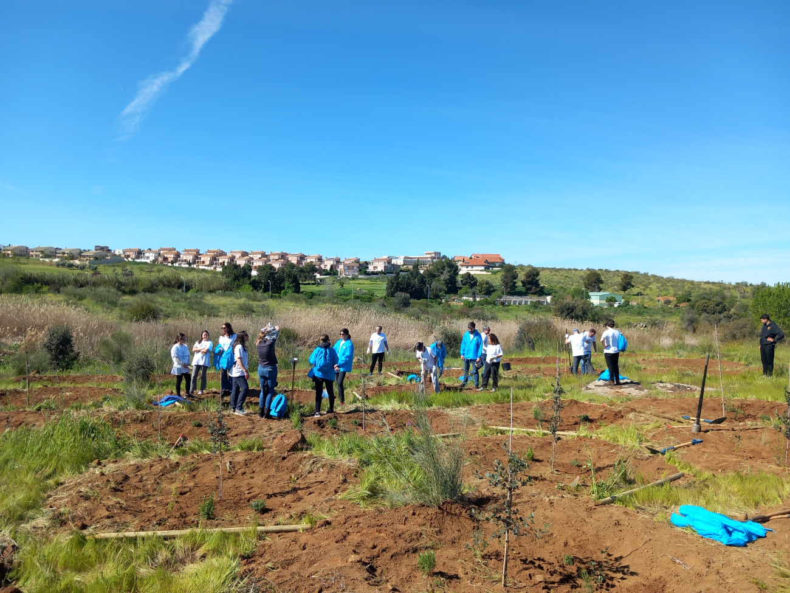
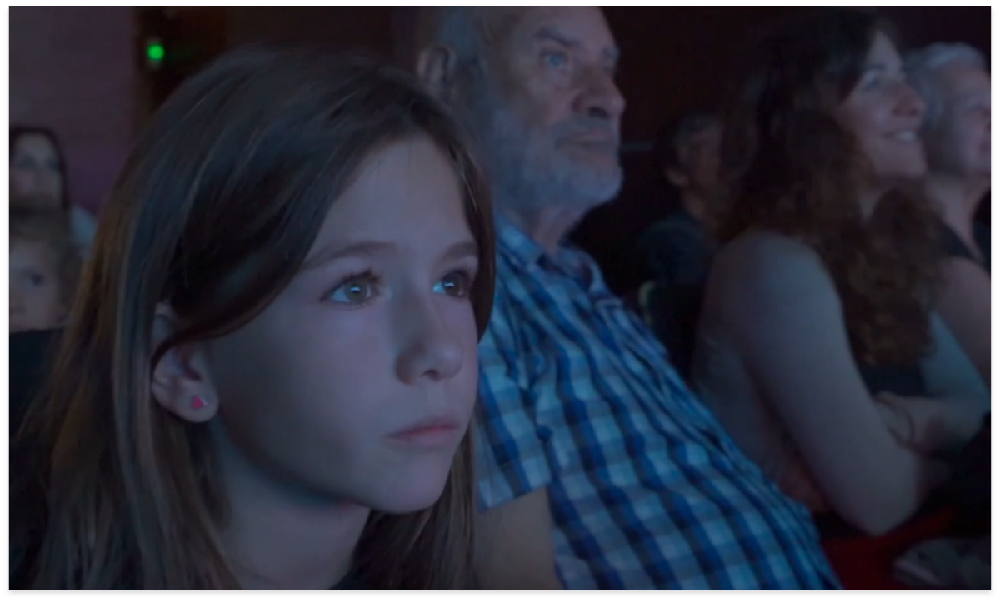
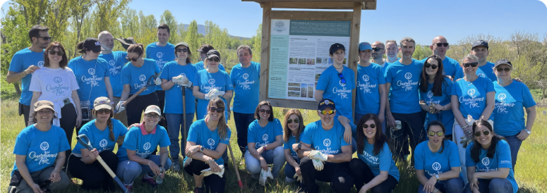
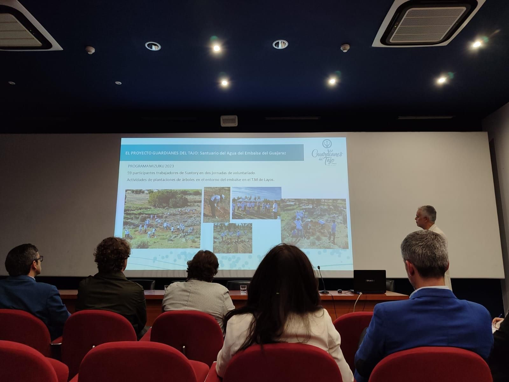
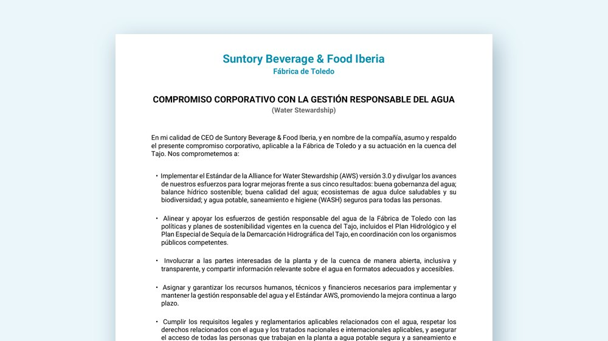

El agua es uno de los recursos más valiosos y esenciales del planeta, y nuestro principal ingrediente. Por eso en Suntory Beverage & Food Iberia vamos más allá de reducir su consumo en la fabricación de nuestros productos, trabajamos hacia la regeneración hídrica activa fuera de los muros de nuestras instalaciones. Conscientes de que los impactos del agua son estrictamente locales, actuamos en las cuencas de influencia donde operamos, para proteger el ciclo del agua, contribuir a su conservación, mejorando su calidad y desarrollando acciones para aumentar su disponibilidad para todos, las comunidades y también los ecosistemas.
Nuestra ambición es ser Water Positive en 2030
Este compromiso aplica a nuestra fábrica ubicada en Toledo e incluye el uso del agua como ingrediente principal, así como los usos auxiliares vinculados a la actividad industrial, como las tareas de limpieza y mantenimiento.


Nuestra ambición Water Positive
Water Positive significa devolver a la naturaleza y a las comunidades más agua de la que utilizamos en la elaboración de nuestras bebidas. Para lograrlo, no basta con reducir el consumo: es necesario actuar en todo el ciclo del agua, desde su origen hasta su uso y regeneración, buscando la mejora de su calidad y disponibilidad. En Suntory Beverage & Food Iberia este compromiso se basa en tres pilares:
Todo ello apoyado en la ciencia, los datos y la colaboración con administraciones, expertos y comunidades locales.
Ver másNuestra ambición de devolver agua a la naturaleza no es solo un compromiso de sostenibilidad. Ante un cambio climático estructural que vuelve el recurso hídrico cada vez más impredecible, garantizar la salud, la resiliencia y la disponibilidad de agua en nuestras cuencas de influencia supone un auténtico seguro de vida, asegurando la viabilidad y la competitividad futura de la compañía. Representa, por tanto, una acción global en la que cada función asume su responsabilidad y, juntos, unimos esfuerzos para alcanzar el objetivo de ser Water Positive para 2030.
Uso eficiente del agua en nuestra fábrica.
Dependemos 100% del agua para nuestra actividad. En un contexto de creciente escasez, mejorar la eficiencia hídrica es clave para garantizar la sostenibilidad de nuestras operaciones. Por ello, hemos invertido en nuevas tecnologías y modernizado nuestros procesos. Estas acciones nos permiten medir con mayor precisión el consumo, identificar oportunidades de mejora, eficiencias y mejoras en nuestra capacidad para reducir y reutilizar el agua utilizada.
Nuestro objetivo es reducir un 20% el consumo de agua por litro de bebida en 2030 respecto a 2015.
2,18 l
de agua por litro de producto fabricado en 2015
2,01 l
de agua por litro de producto fabricado en 2025
+35.000 m³
de agua ahorrada al año gracias a las acciones de eficiencia en fábrica.


Actuar en el origen del agua
Guardianes del Tajo es nuestro proyecto emblemático en España para proteger y restaurar los recursos hídricos en el entorno de la cuenca del Tajo. Se desarrolla, entre otros, en la zona del embalse de Guajaraz, fuente clave para el abastecimiento de nuestra planta de Toledo y del entorno local, con un objetivo claro:
Mejorar la cantidad y la calidad del agua a largo plazo, así como la biodiversidad de la zona.
El proyecto persigue un enfoque integral con los siguientes objetivos:
· Agua: Mejorar la calidad y cantidad del agua disponible, cuantificando los beneficios mediante el marco VWBA (Volumetric Water Benefit Accounting).
· Biodiversidad: Restaurar hábitats degradados, proteger especies nativas, controlar invasoras y establecer indicadores para el seguimiento a largo plazo.
· Resiliencia Climática: Fomentar la adaptación al cambio climático implementando Soluciones basadas en Naturaleza (SbN) para mitigar los efectos dañinos de inundaciones y sequías y su posible afección a las instalaciones de la fábrica de Toledo.
· Gobernanza: Promover la gestión integral y responsable del agua, incluyendo los trabajos para la certificación AWS (Alliance for Water Stewardship) de la planta de Toledo.
Un proyecto que nace del territorio
En 2021, Guardianes del Tajo se definió mediante un proceso participativo con actores locales, identificando la cuenca del embalse de Guajaraz como área prioritaria e inicial de actuación. Este territorio tiene un papel estratégico ya que abastece a la ciudad de Toledo y suministra agua a nuestra planta.

Un entorno con grandes desafíos
La cuenca del embalse de Guajaraz y su entorno presentan una elevada vulnerabilidad hídrica y ambiental, derivada tanto de presiones históricas como de los efectos crecientes del cambio climático. Los análisis iniciales realizados en 2021, junto con los estudios científicos desarrollados posteriormente, han identificado una serie de retos clave:
- Presión sobre la calidad del agua, asociada principalmente a fuentes difusas de origen agrícola y ganadero, así como a infraestructuras de tratamiento existentes.
- Degradación de ecosistemas, incluyendo el deterioro de hábitats fluviales y del monte mediterráneo, pérdidas de biodiversidad y presencia de especies invasoras.
- Procesos de erosión y sedimentación, que afectan al funcionamiento natural de la cuenca y a la capacidad de los embalses.
- Alta vulnerabilidad al cambio climático, con previsiones de reducción significativa de aportaciones hídricas y recarga de acuíferos según modelos científicos desarrollados entre 2022 y 2025.
- Incremento de eventos extremos, como episodios de lluvias intensas e inundaciones repentinas, evidenciados en fenómenos recientes como la DANA de septiembre del 2023.
Este contexto refuerza la necesidad de un enfoque integral, basado en la ciencia y en la implementación de soluciones adaptadas al territorio, que permitan mejorar la resiliencia hídrica y ecológica de la cuenca.
Para más información sobre los estudios e informes técnicos realizados, consulta el apartado “Documentos de interés”.
Ver másNuestras acciones
del arroyo Layos B Programa de reforestación
Bosque Suntory C Proyecto de Eficiencia Hídrica
y Agricultura regenerativa D Restauración del río Tajuña:
infraestructuras obsoletas E Territorios esponja: acciones
piloto en la Fundación Carral. F Inspección de tuberías para
la identificación de fugas
Impacto de los Guardianes
2.411
plantas autóctonas introducidas en el arroyo de Layos
4,56 ha
de bosque Suntory reforestado desde comienzo del proyecto
+250
participaciones en el voluntariado de reforestación del Bosque Suntory
≈118.000 m³
de agua ahorrada por eficiencia hídrica y agricultura regenerativa en Finca Santa Catalina en el año 2025
+600.000 m³
de agua recuperada por el proyecto de retirada de 3 azudes en el río Tajuña
Concienciar para proteger el agua
Mizuiku es el programa educativo de Suntory Beverage & Food Iberia que acerca el valor del agua a las nuevas generaciones. Su nombre combina las palabras japonesas mizu (agua) e iku (educar), reflejando su propósito: no solo transmitir conocimiento, sino también generar una conexión emocional con el agua e inspirar un uso responsable en el día a día.
Desde su implantación en España en 2022, el programa se ha desarrollado a través de talleres en centros educativos, apoyados por materiales pedagógicos que ayudan a comprender el ciclo del agua, su importancia y el impacto de nuestras acciones.
En 2025, Mizuiku evoluciona para ampliar su alcance con el lanzamiento de la obra teatral “El Viaje del Agua”, una propuesta que utiliza el arte y la cultura para emocionar, generar reflexión y reforzar la conexión con el valor del agua.
+20.000
estudiantes alcanzados en total
9.500
estudiantes vieron “El Viaje del Agua” en 2026
75
centros educativos participantes en 2026
≈70%
de los docentes encuestados en 2026 repetirían
Otras iniciativas
En este apartado se recogen otras iniciativas vinculadas al cuidado y la gestión sostenible del agua, como los voluntariados, las jornadas divulgativas, las representaciones del programa Mizuiku o los comunicados dirigidos a nuestros grupos de interés. Son acciones que buscan acercar el cuidado del agua a las personas y mantener informado a nuestro entorno sobre los avances hacia nuestra ambición Water Positive.

Comunicado a las partes interesadas: certificación AWS
Nuestra fábrica de Toledo ha iniciado el proceso de certificación de la Alliance for Water Stewardship (AWS), la norma internacional de gestión responsable del agua. Las partes interesadas pueden enviar sus comentarios a través de este comunicado.
Descargar anuncio
Certificación AWS: compromiso de gestión responsable del agua
En SBFI hemos asumido un compromiso de gestión responsable del agua para nuestra fábrica de Toledo, de acuerdo con la norma internacional AWS.
Descargar compromisoDocumentos de interés
En este apartado se recogen los estudios, informes y publicaciones científicas de nuestros proyectos, desde los análisis que nos ayudan a conocer el estado del agua y la biodiversidad de la cuenca hasta los informes de obra, seguimiento y resultados de cada actuación. Son trabajos elaborados junto a universidades, consultoras y entidades especializadas que colaboran con nosotros en Guardianes del Tajo.
Ningún documento coincide con esta combinación de filtros.
Enlaces de interés
Más información sobre nuestra ambición Water Positive y sobre los proyectos de Guardianes del Tajo en las webs de Suntory y de las entidades que colaboran con nosotros.
Noticias
Actualidad sobre nuestra ambición Water Positive, los proyectos de Guardianes del Tajo y el programa Mizuiku, en la web de Suntory Beverage & Food Iberia y en los medios.
Proteger el agua es proteger nuestros recursos y a las generaciones futuras.
© 2026 Water Positive 2030 · Suntory Beverage & Food Iberia. Todos los derechos reservados.
{{ proyTitulo }}
{{ t.texto }}
{{ proyEstado }}
{{ k.valor }}
{{ k.etiqueta }}